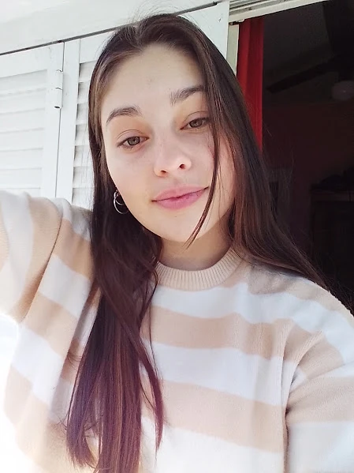
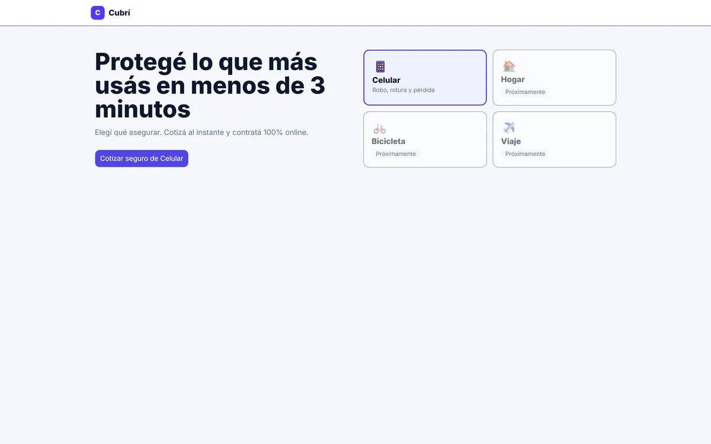
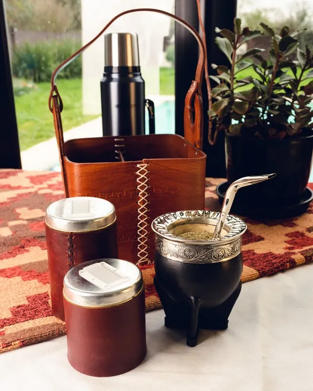

Diseño centrado en el usuario
Entender necesidades reales para tomar decisiones con propósito.
UX/UI DESIGNER WEB DEVELOPER
Estudiante de Licenciatura en Sistemas de Información. Diseño experiencias digitales intuitivas, funcionales y atractivas.
Proyectos documentados
Áreas principales
UX/UI + DesarrolloHerramientas y tecnologías
Formación en curso

Soy estudiante de la Licenciatura en Sistemas de Información en UADER. A lo largo de mi formación desarrollé trabajos relacionados con diseño UX/UI, prototipado, arquitectura de información y aplicaciones web.
Me interesa combinar pensamiento visual y técnico para diseñar soluciones que sean fáciles de utilizar.
Entender necesidades reales para tomar decisiones con propósito.
Explorar, iterar y transformar cada desafío en una oportunidad.
Crear experiencias claras, inclusivas y listas para crecer.
Un enfoque que integra investigación, diseño visual y desarrollo para conectar estrategia con ejecución.
Comprender antes de diseñar.
Interfaces claras, consistentes y escalables.
Del concepto a experiencias funcionales.
Pensamiento técnico y trabajo colaborativo.
Trabajos académicos reales y un proyecto conceptual, documentados desde el problema hasta la solución.

Contratación digital de seguros
Flujo responsive de cotización, elección de plan, datos, pago simulado y confirmación para seguros de celular.
Resultado: flujo de 7 estados publicado en GitHub Pages.
Ver caso de estudio
Una experiencia editorial para café
Landing de nueve secciones, mobile-first y accesible, construida únicamente con HTML5 semántico y CSS3.
Resultado: landing de 9 secciones sin JavaScript ni frameworks.
Ver caso de estudio
Fundamentos web aplicados
Recorrido progresivo desde estructura HTML hasta una landing integradora con Grid, Flexbox, variables y animación.
Resultado: 20 entregables y una landing integradora final.
Ver caso de estudioEquipate para cada aventura
Diseño de una experiencia de compra especializada en indumentaria y accesorios para motociclistas.
Resultado: prototipo de alta fidelidad con flujo de compra de 5 pasos.
Ver caso de estudioUna formación que cruza sistemas, tecnología y diseño de experiencias.
Formación en desarrollo de sistemas, diseño UX/UI y tecnologías de la información.
Materia de diseño de experiencias e interfaces con prototipado y desarrollo front-end.
Estoy abierta a intercambiar ideas, aprender y participar en nuevos desafíos.